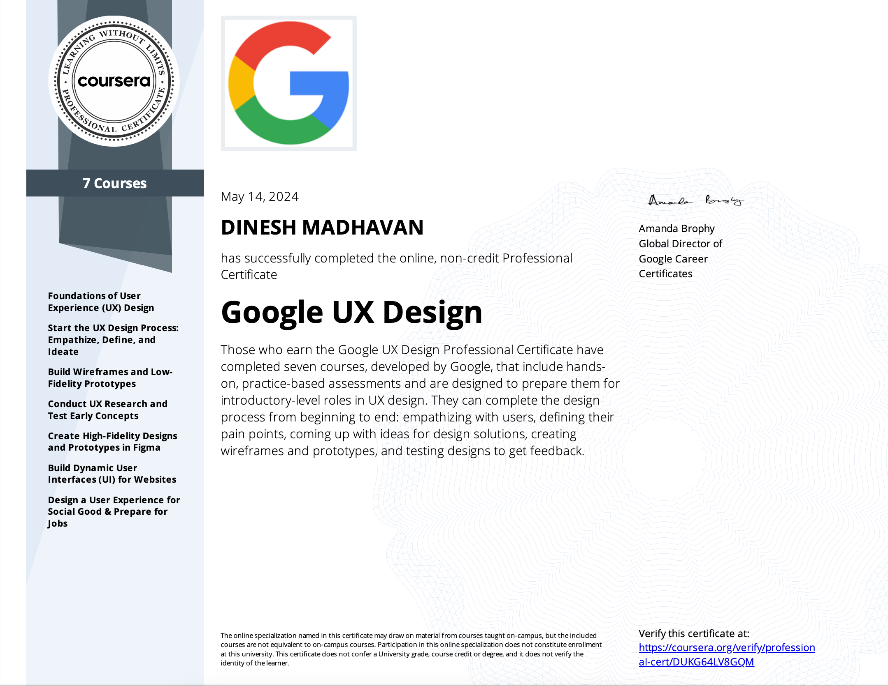
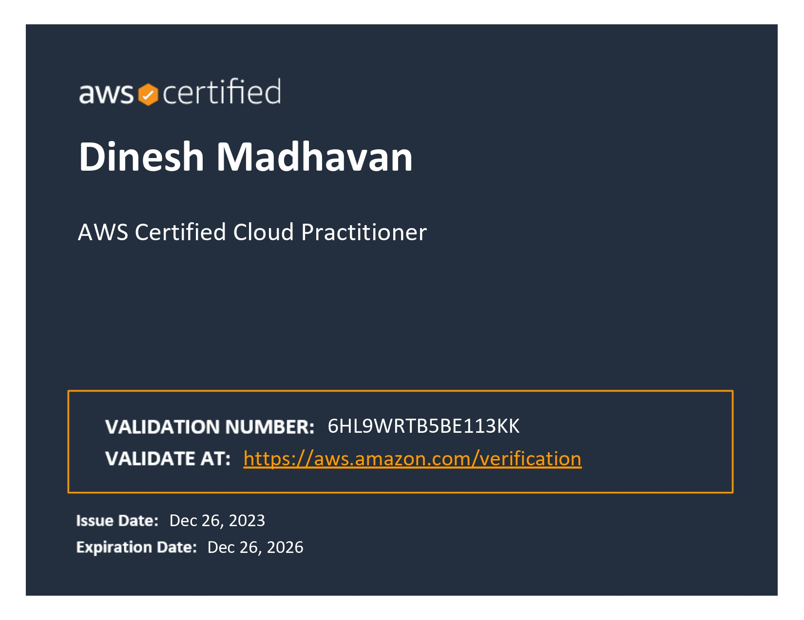
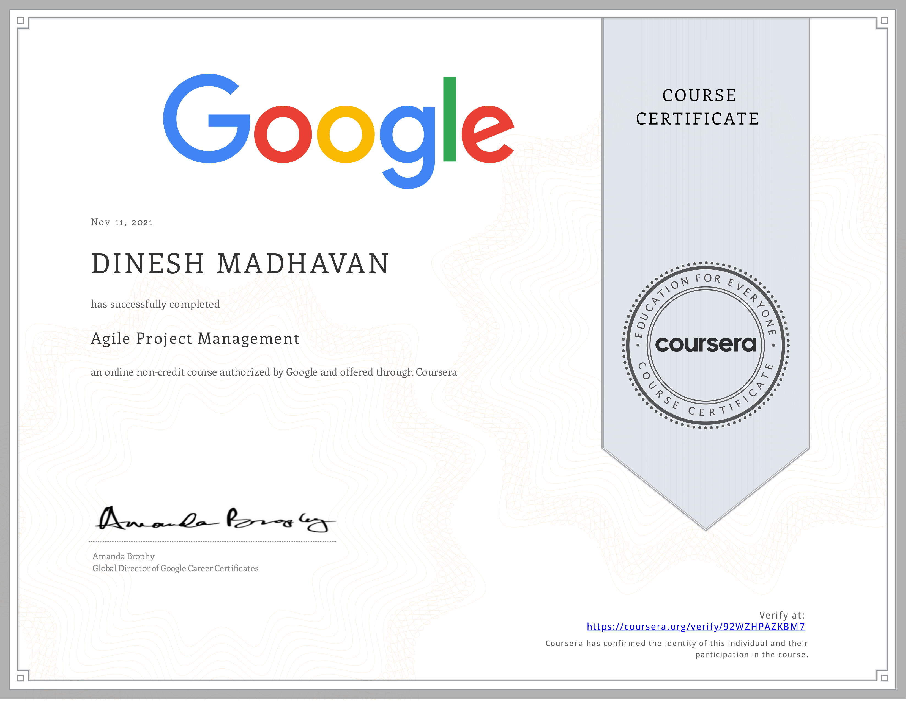

Dinesh Madhavan | UX/UI Design
Portfolio
Dinesh Madhavan | UX/UI Design
PortfolioAbout Me
Hello! I'm Dinesh Madhavan, a Master's graduate in Business Information Systems from Monash University üéì, with a profound interest in UI/UX design and business analysis.
Currently expanding my expertise on Microsoft Power BI, I'm honing a skill set that encompasses user empathy, technical design implementation, and strategic business analysis.
Professionally, I am known for my collaborative nature, analytical acumen, and a keen eye for detail.
Outside of work, my interests include:
- üé¨ Watching movies and delving into comics, where storytelling and visual artistry inspire my design thinking.
- üíª Designing and Coding, enjoying the process of creating and problem-solving.
- ☕ Discovering new coffee spots in Melbourne.
- ✈️ Traveling to new destinations, gathering insights on different cultures and design perspectives.
Certifications


